School / 01
School by Bright
School shaped for education, training & learning services decisions.
School opens as a clear education decision hub: what Bright offers, who it helps, why it matters, and which route to take first.
The first screen combines positioning, proof, primary action, and fast internal navigation, so people can act immediately or compare the rest of the school route with context.
Clear intakeHuman follow-upPractical reassurance
Black cinematic course hero
Filter the options
Select the closest route and Bright keeps the next step, proof, and follow-up expectation aligned with confidence and progress.
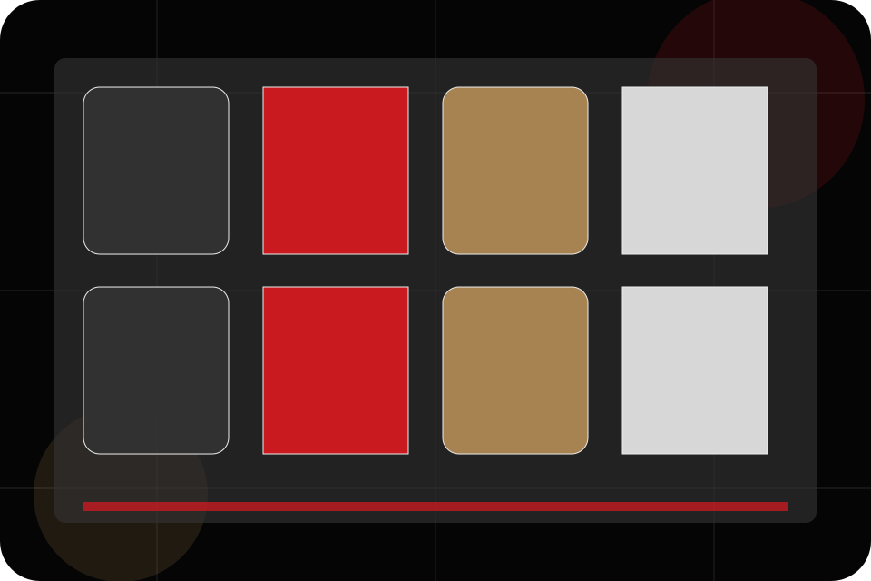
School / 02
Mission
Mission adds care context to the school route, using the cinematic course catalogue structure to support confidence and progress before visitors choose a next step.
Bright uses lesson trailer cards and focused copy to make the decision easier to scan, aligning the section with confidence and progress rather than filling space.
Explore School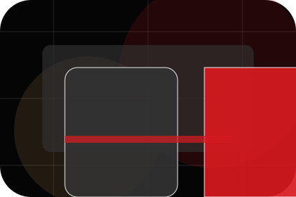
Context
Mission gives the page a specific angle instead of repeating the navigation label.
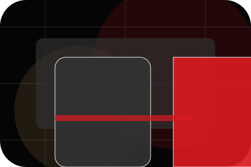
Judgment
The lesson trailer cards show what to compare, what to avoid, and what matters most for education, training & learning services visitors.
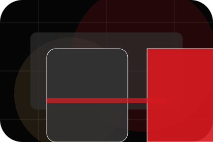
Direction
The final cue points to a useful internal route so the section keeps the journey moving.
School / 03
Standards
Standards gives the proof layer for school: standards, evidence, and reassurance that make the next decision feel grounded.
Instead of relying on vague claims, Bright presents visible standards, process cues, and proof artifacts that help education visitors judge fit.
Explore SchoolBright structures standards around evidence, standard, and a clear next route so visitors can compare the block quickly before they book a trial.
Book TrialSchool / 04
Community
Community adds care context to the school route, using the cinematic course catalogue structure to support confidence and progress before visitors choose a next step.
Bright uses lesson trailer cards and focused copy to make the decision easier to scan, aligning the section with confidence and progress rather than filling space.
Explore SchoolContext
Community gives the page a specific angle instead of repeating the navigation label.
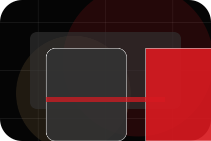
Judgment
The lesson trailer cards show what to compare, what to avoid, and what matters most for education, training & learning services visitors.
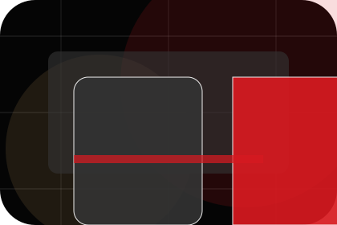
Direction
The final cue points to a useful internal route so the section keeps the journey moving.
School / 05
Values
Values adds care context to the school route, using the cinematic course catalogue structure to support confidence and progress before visitors choose a next step.
Bright uses lesson trailer cards and focused copy to make the decision easier to scan, aligning the section with confidence and progress rather than filling space.
Explore SchoolContext
Values gives the page a specific angle instead of repeating the navigation label.
School / 06
Philosophy
Philosophy adds care context to the school route, using the cinematic course catalogue structure to support confidence and progress before visitors choose a next step.
Bright uses lesson trailer cards and focused copy to make the decision easier to scan, aligning the section with confidence and progress rather than filling space.
Explore SchoolContext
Philosophy gives the page a specific angle instead of repeating the navigation label.
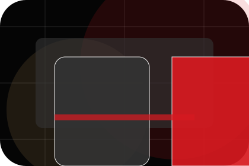
Judgment
The lesson trailer cards show what to compare, what to avoid, and what matters most for education, training & learning services visitors.
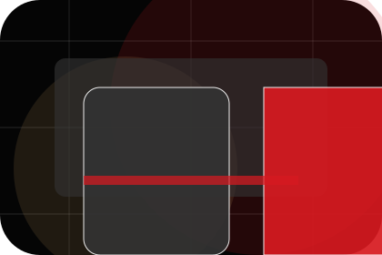
Direction
The final cue points to a useful internal route so the section keeps the journey moving.
School / 07
Teachers
Teachers introduces the people, roles, or specialist credibility behind Bright so the decision feels less anonymous.
The copy ties names, roles, credentials, or availability back to the decision on the page instead of treating profiles as decorative biographies.
Explore School- 01
Role
The person, team, or specialist function connected to teachers is easy to understand.
- 02
Credibility
Credentials, responsibilities, or availability are tied to the visitor's decision, not listed for decoration.
- 03
Handoff
The section explains how to move from profile interest to a practical conversation or booking path.
School / 08
Outcomes
Outcomes shows what changes after the work: clearer decisions, visible progress, and proof points that connect the offer to real outcomes.
The layout connects before-and-after thinking with measured outcomes, making the result easy to scan without promising what the business cannot guarantee.
Explore SchoolBefore
The uncertainty, delay, or missed opportunity visitors bring into outcomes.
After
The clearer, safer, or more valuable state Bright is designed to support.
Proof
The visible cue that connects outcomes to a believable decision, not a loose claim.
School / 09
Trust
Trust gives the proof layer for school: standards, evidence, and reassurance that make the next decision feel grounded.
Instead of relying on vague claims, Bright presents visible standards, process cues, and proof artifacts that help education visitors judge fit.
Explore School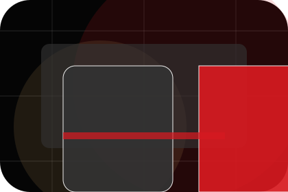
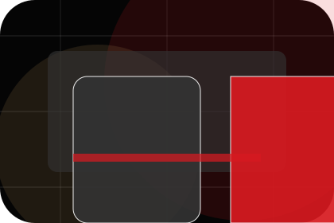
Evidence
Visible proof that helps visitors believe the claims behind trust.
School / 10
Book Trial
Bright closes the school route with a clear action, a quick reminder of the value, and a low-friction way to book a trial.
Visitors who are ready can use the primary action. Visitors who are still comparing can scan the section links, proof, and support routes before they book a trial.
Book TrialThe final block keeps the choice simple: act now, compare one more proof route, or send enough detail for a focused response.
Book Trialconfidence and progress
Book Trial
A course-led education site with cinematic hero, lesson shelves, premium teacher proof, and trial routes. School ends with a direct path to book a trial, plus enough context for visitors who still need to compare.
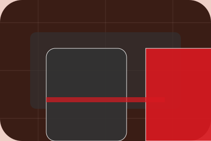
Book Trial